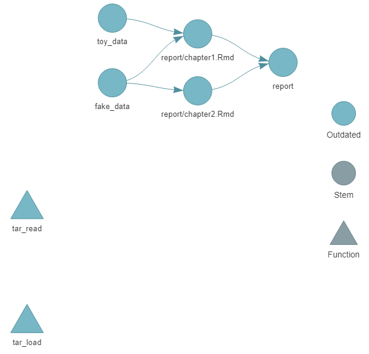
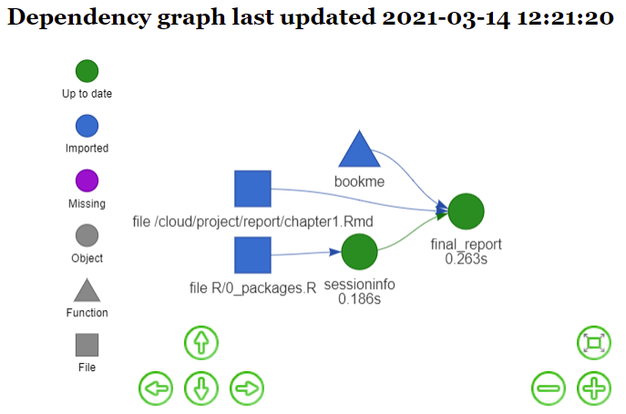

A little package to quickly include templates for our project structures and workflows.
Installation
# install.packages("remotes") # just in case
remotes::install_github("edalfon/flowme")Example: setup a {targets} project
A very thin -yet fully functional- template for a targets project.
You just type:
flowme::use_targets() # alias flowme::targetsme()And get the bare bones infrastructure for a targets project that compiles a report using bookdown. Then you can simply run the pipeline (targets::tar_make()) to compile a sample report that should get you started.
Here’s how the sample pipeline looks like:
targets::tar_visnetwork()
See some more details in vignette("targetsme", package = "flowme")
Example: setup a {drake} project
Having flowme installed, you would only need to call
flowme::drakeme()It gets you started to an empty but ready-to-fly drake project (including key dependencies).
Using drake::vis_drake_graph() you can peek at the drake dependency graph for this boilerplate.

This is already a fully functional project that you can run by calling drake::r_make() and it compiles a sample report.
Now, you only need to do your thing in drake plans, include them as indicated in _drake.R, write your results in Rmd files within the report directory and simply call drake::r_make() to render them all into a book.
See some more details in vignette("drakeme", package = "flowme")
More details
More details on the proposed workflow in flowme’s web site